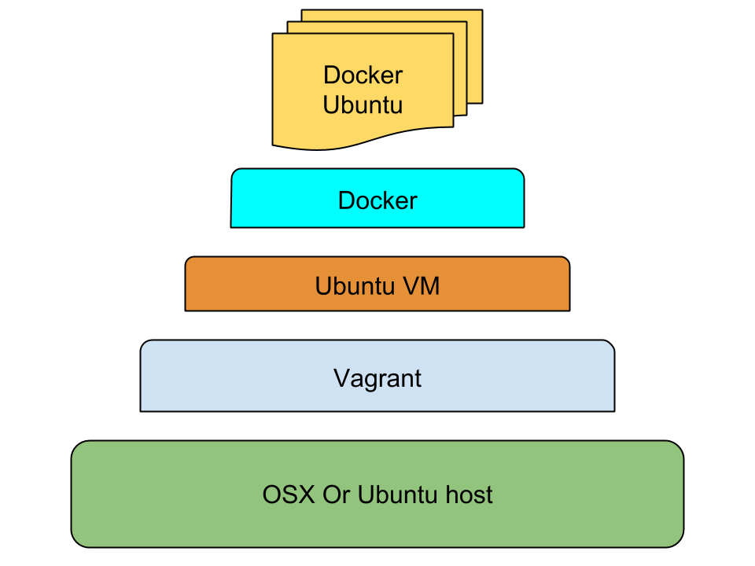

Docker with OSX and Ubuntu


TL;DR
How to install and configure Docker on OSX and Ubuntu. What are the basic Docker commands, then more useful example of how to build Docker images. This howto also includes many handy Docker tips and in addition some suggestions for what to use Docker with and how to host your containers.
Why Docker
Docker is a great invention. Both for operations of deploying and hosting of systems and also for developers.
Docker is a virtual operating system container. It allows you develop and run one or several systems on your computer or server isolated from your actual OS. This protects your host system, but also easy to clone, extend, scale and share containers.
Virtualisation is nothing new. Mainframes has split virtually into many systems per real server for decades. VMWare have created a huge enterprise selling many solutions for virtualising servers and desktops. Sun then Oracle developed the popular open source software VirtualBox. Xen powers Amazon's AWS EC2 cloud servers that host a huge portion of the worlds internet servers. Every other IAAS and PAAS provider use virtualisation extensively.
VMWare Workstation with Ubuntu for many years was my way to overcome companies' standardised Windows environments. Frequently teams use VirtualBox to share images of company essential tools, E.g. Windows preconfigured with DB2 or SQL Server, or just to test with Microsoft Internet Explorer and Outlook etc.
A colleague introduced me to Vagrant a few years ago, and I have since used it extensively. It is basically Virtualbox without any GUI, just command line. It allows you to run many virtual servers locally and usually for just one purpose. E.g. to develop one application. And to quickly scratch and rebuild these environments. I also use Vagrant to test server images locally with e.g. Puppet provisioning, before pushing it to a data center or IAAS.
Docker's great distinguisher is that it shares the hosts memory and disk space so you no longer need to reserve memory per VM. Docker also only stores files that are different from the host base. This makes Docker great for single purpose (often single thread) applications. In fact Docker containers often shut down when application thread is no longer running. But they resume really quickly.
A lot of this howto is based on getting-started-with-docker by Chris Fidao.
A follow up howto is Docker with Compose, Machine and Swarm, easy steps from localhost to cloud providers.
OSX + Docker
Mac OS X can not run Docker natively as Docker uses Linux kernel specific features. However the Docker team has made a tiny VM, boot2docker, to seamlessly run your Docker containers on OSX (and even Windows). This is the easiest option.
Alternatively you run a Vagrant VM with Linux as the container for all Docker images.
boot2docker
You can install boot2docker via normal OSX packages or if you prefer via Homebrew (and Cask).
osxhost$ brew install boot2docker;
osxhost$ brew install docker
This install Docker command line tools in OSX, but relays all communications via a socket to the Docker daemon running inside the boot2docker VM instead of the local machine.
OSX + Vagrant
With the Vagrant alternative you can customise it more and have a layer of separation which might be comforting. You can easily share any local folders with your VM and its containers.
osxhost$ brew cask install virtualbox;
osxhost$ brew install vagrant
Kitematic
Another alternative for the ones preferring a nice GUI is to use the smooth Kitematic application. It basically runs boot2docker underneath as well but everything all managed and run within a GUI.
Ubuntu + Docker
With Ubuntu you do not need to abstract via a VM as Docker works directly. Though note that there is an old unrelated package that is already called docker so you need to install docker.io.
ubuntuhost$ sudo apt-get update;
ubuntuhost$ sudo apt-get install docker.io
If you want a more up to date version of docker then instead add their own apt repository and install lxc-docker.
ubuntuhost$ sudo apt-get remove docker.io;
ubuntuhost$ sudo apt-key adv \
--keyserver hkp://keyserver.ubuntu.com:80 \
--recv-keys 36A1D7869245C8950F966E92D8576A8BA88D21E9;
ubuntuhost$ sudo sh -c \
"echo deb https://get.docker.io/ubuntu docker main >\
/etc/apt/sources.list.d/docker.list";
ubuntuhost$ sudo apt-get update;
ubuntuhost$ sudo apt-get install lxc-docker
Ubuntu + Vagrant
Even on Ubuntu I still use Vagrant as the VM container for all my Docker applications. This is to keep a clean abstraction and to be able to share setup between OSX and Ubuntu.
You can install via apt-get, but they are often out of date, so you may want to directly download more up to date versions of Virtualbox and Vagrant.
ubuntuhost$ sudo apt-get install virtualbox;
ubuntuhost$ sudo apt-get install vagrant
Make sure you have the multiverse repository enabled.
Vagrant + Ubuntu
anyhost$ vagrant plugin install vagrant-vbguest
This installs a plugin that automatically installs and updates Virtualbox Guest Additions into every Vagrant instance.
anyhost$ vagrant plugin install vagrant-vbox-snapshot
Optionally install a plugin that enable snapshotting of vagrant boxes.
anyhost$ vagrant init ubuntu/trusty64
This downloads a Vagrant Ubuntu 14.04 image, and initialises a Vagrant instance for you.
Edit the Vagrantfile it created in your folder.
# -*- mode: ruby -*-
# vi: set ft=ruby :
VAGRANTFILE_API_VERSION = "2"
Vagrant.configure(VAGRANTFILE_API_VERSION) do |config|
config.vm.box = "ubuntu/trusty64"
config.vm.hostname = "vagrantdocker"
if Vagrant.has_plugin?("vagrant-vbguest") then
config.vbguest.auto_update = false
end
# config.vm.synced_folder "../data", "/vagrant_data"
# config.vm.provider "virtualbox" do |vb|
# vb.customize ["modifyvm", :id, "--memory", "2048"]
# end
config.vm.provision "docker"
end
This sets the provisioner as Docker, so Docker is installed and ready to use. The Docker IP address will be displayed when logging in. Vagrant will also resume all Docker containers when the VM restarts.
It sets a recognisable hostname. Disabling guest additions updates for this specific instance is advisable. It also includes examples for syncing folders and increasing the allocated memory.
anyhost$ vagrant up;
anyhost$ vagrant ssh
This boots it up and logs you in.
Vagrant + CoreOS
CoreOS is another Linux distribution that is designed to run and scale across multiple servers from the start. CoreOS' philosophy views Docker as a core part of their offering.
I would suggest once you are comfortable with Ubuntu as Docker host to try out CoreOS as well. Use Vagrant with CoreOS locally.
Note: CoreOS is ideal as host only, you would probably still use Ubuntu as Docker base image .
Docker + Ubuntu
Your Docker applications will mostly be based of one base image. In my case mostly Ubuntu, though sometimes Debian.
Recursive Ubuntu
This could in theory be your second or third level of Ubuntu within Ubuntu. Ubuntu Host + Vagrant with Ubuntu + Docker with Ubuntu.
{kind=link}
Docker's Ubuntu
Docker's own default base image is the standard Canonical Ubuntu minimal image.
dockerhost$ docker pull ubuntu
This downloads Docker's Ubuntu image and stores it locally. Docker has a range of ready made images in their registry. Later you can easily upload your images to this register.
Phusion's Ubuntu
Phusion has adapted Ubuntu to be more compatible with Docker. This is because Docker images simply are not a full blown server with a normal lifecycle. Instead it is limited to how many threads can run and also when it suspends/shuts down. A majority of Docker examples and code you find online assumes this is the base image used.
dockerhost$ docker pull phusion/baseimage
Debian
Ubuntu is based on Debian, and the base Debian image is smaller than Ubuntu, which might make a difference.
dockerhost$ docker pull debian:wheezy
Basic Docker
dockerhost$ docker ps
Lists all Docker processes running.
dockerhost$ docker ps -la
Lists the latest Docker processes including the ones that has finished.
| CONTAINER ID | IMAGE | COMMAND | CREATED | STATUS | PORTS | NAMES |
Nothing has been run yet so these will initially be empty.
dockerhost$ docker run ubuntu /bin/bash
Starts a docker image using the Ubuntu image and runs a bash process. And immediately stops it as nothing else is specified.
dockerhost$ docker ps
As the bash process finished quickly it won't still be running.
dockerhost$ docker ps -a
| CONTAINER ID | IMAGE | COMMAND | CREATED | STATUS | PORTS | NAMES |
| 98765defgh | ubuntu:14.04 | "/bin/bash" | 11 seconds ago | Exited (0) 11 seconds | stoic_pike |
But it will be listed as having finished. Note the container id column.
dockerhost$ docker run -t -i ubuntu /usr/bin/top
This starts and keeps a process running. In another shell list processes. (log into the vagrant instance if applicable)
dockerhost$ docker ps
| CONTAINER ID | IMAGE | COMMAND | CREATED | STATUS | PORTS | NAMES |
| 22121abcd | ubuntu:14.04 | "/usr/bin/top" | 11 seconds ago | Up 11 seconds | determined_davinci |
As you can see it is running. End the top session (press q).
dockerhost$ docker ps -la
| CONTAINER ID | IMAGE | COMMAND | CREATED | STATUS | PORTS | NAMES |
| 22121abcd | ubuntu:14.04 | "/usr/bin/top" | About a minute ago | Exited (0) 3 seconds | determined_davinci |
And now it is marked as finished.
dockerhost$ docker run -t -i ubuntu /bin/bash;
docker$ touch example.txt;
docker$ exit;
dockerhost$ docker ps -la
| CONTAINER ID | IMAGE | COMMAND | CREATED | STATUS | PORTS | NAMES |
| 12345abcd | ubuntu:14.04 | "/bin/bash" | 15 seconds ago | Exited (0) 10 seconds | sleepy_franklin |
Note container id of latest bash session.
dockerhost$ docker diff 12345abcd
Replace 12345abcd with the container id of your bash session.
| A /.bash_history |
| A /example.txt |
This diff lists files changed by your process. Should list /example.txt and /.bash_history.
dockerhost$ docker commit 12345abcd mycoolimages/example-image:0.1
This creates an image we can recreate, base other images on etc.
dockerhost$ docker images | head
| REPOSITORY | TAG | IMAGE ID | CREATED | VIRTUAL SIZE |
| mycoolimages/example-image | 0.1 | 0123abcd00 | 10 seconds ago | 194.2 MB |
| ubuntu | 14.14 | 112233445566 | 10 days ago | 194.2 MB |
| ... | ||||
Lists images created by you, and all the downloaded images as well.Helpfully lists their relative size difference from their base image. As you can see mycoolimages/example-image:0.1 is listed at the top.
Useful Docker
Now you know how to launch docker images and how to make docker images. Lets now create some more useful images.
A Dockerfile is used in a similar fashion to a Vagrantfile. It describes what an image is based on, what to do with it, e.g. what to provision, and which processes to run on it.
Lets create one that install and runs an Apache web server inside Docker. And shows a specific index.html file.
dockerhost$ mkdir apacheexample;
dockerhost$ cd apacheexample;
dockerhost$ touch index.html
Edit the just touched apacheexample/index.html file.
<html>
<body>
<h1>Hello Docker world</h1>
</body>
</html>
dockerhost$ touch Dockerfile
Edit the just touched apacheexample/Dockerfile file.
FROM mycoolimages/example-image:0.1
RUN apt-get update
RUN apt-get install -y apache2
RUN apt-get clean
EXPOSE 80
ADD index.html /var/www/html/index.html
CMD ["apache2ctl","-DFOREGROUND"]
Lets create an image of this Apache Dockerfile.
dockerhost$ docker build -t mycoolimages/apache .;
dockerhost$ docker images | head
| REPOSITORY | TAG | IMAGE ID | CREATED | VIRTUAL SIZE |
| mycoolimages/apache | latest | a1b2b3b4b5b6 | 10 seconds ago | 467.2 MB |
| mycoolimages/example-image | 0.1 | 0123abcd00 | 1 day ago | 194.2 MB |
| ubuntu | 14.14 | 112233445566 | 10 days ago | 194.2 MB |
| ... | ||||
dockerhost$ docker run -p 80:80 -d mycoolimages/apache
dockerhost$ docker ps
| CONTAINER ID | IMAGE | COMMAND | CREATED | STATUS | PORTS | NAMES |
| 992sasd | mycoolimages/apache:latest | "/usr/sbin/apache2" | 10 seconds ago | Up 10 seconds | 80/tcp | dozy_roses |
dockerhost$ curl localhost
| <html> |
| <body> |
| <h1>Hello Docker world</h1> |
| </body> |
| </html> |
To expose this if running inside Vagrant, you need to add port forwarding to your Vagrantfile.
config.vm.network "forwarded_port", guest: 80, host: 8080
Or utilise the flexibility of the port ranges mention in the handy tips section
dockerhost$ docker stop 992sasd
Stops the container gracefully.
Handy Docker
Some tips on how to make Docker even more useful.
Folder volumes
dockerhost$ docker run \
-v /vagrant/www:/var/www:ro \
-v /vagrant/logs:/var/logs/apache2:rw \
-p 80:80 -d mycoolimages/apacheother
This shares the local folders with the Docker container as a volume. /vagrant/www is shared as /var/www in a read only mode. /vagrant/logs is shared as /var/logs/apache2 in a read and write mode.
Note for the image we created earlier (mycoolimages/apache) this will cause a conflict as we already added the index.html file to /var/www. So create a different image first.
The example includes the path /vagrant which is if your Docker host is a Vagrant VM. The /vagrant folder is the automatically shared folder from your real host's folder containing the Vagrantfile. If you want to share other folders between your host and Vagrant add lines like these to the Vagrantfile.
config.vm.synced_folder "/opt/mysite", "/var/www"
This makes the host's /opt/mysite folder available as /var/www inside Vagrant.
Obviously if you use Docker natively you can share any path directly as a volume.
Another option is to hardcode volumes inside the Dockerfile.
A third option is volume containers, where you share the same volumes with other containers. Such as sharing for example maven repositories.
If you use boot2docker you can't share any paths quite as easily. Docker are working on improving OSX volume sharing. By default on OSX for example /Users are shared with your boot2docker VM and its subfolders are ready to mounted via volumes. Otherwise you have to set up a volume container for other paths.
Link containers
A natural set up is to have a system split across multiple containers. E.g. web site on one, business logic application via REST API on another, and the database on a third.
Docker can easily link these together.
dockerhost$ docker run -p 5432:5432 --name mydb -d mydbimage
dockerhost$ docker run -p 8080:80 --name myapp --link mydb:db -d myappimage
dockerhost$ docker run -p 80:80 --name myweb --link myapp:app -d mywebimage
Note the name and link arguments. Docker has modified myweb container's /etc/hosts file to contain an alias to app. Docker has also made environment variables available for you applications to use.
Once you are linked up, there is a further abstraction called Ambassador Pattern Linking.
Restart
dockerhost$ docker start 992sasd
Restarts a stopped container.
Instead of CONTAINER ID, you can also use the names associated with a container.
Kill
dockerhost$ docker kill 992sasd
Kills a running container immediately.
Remove
dockerhost$ docker rm abcd1234
Removes a container.
dockerhost$ docker rm $(docker ps -a -q)
Removes all containers.
dockerhost$ docker rmi myimage
Removes an image.
Dockerfile
As shown earlier Dockerfile describes how to build a container image. Much like a Vagrantfile with an included provisioner (e.g. Puppet).
Mostly you copy others or your own Dockerfiles and use them as a template to extend. Combined with copying others or your own images to base the Dockerfile on.
- Dockerfile reference
- registry.hub.docker.com
- dockerfile.github.io
- github.com/flurdy/Dockerfiles
- github.com/search?q=Dockerfile
Once familiar you will start to make sure the start of many Dockerfiles are exactly the same, as Docker will then cache and reuse build steps up until the files differ.
Also chaining each RUN step to create fewer Docker layers will be appreciated, and cleaning up each step to minimise image size.
Supervisor
If you want to run multiple processes in the same container, or manage process lifecycle and automatic restarts, then a Supervisor daemon is needed.
Memory
If you run your Docker on OSX or within a Vagrant VM then you probably want to allocate more memory to it. For example 3GB.
boot2docker
osxhost$ boot2docker delete
osxhost$ boot2docker init -m 3072
osxhost$ boot2docker info
Note that this will destroy the Docker containers inside the VMs. Make sure they are backed up.
Vagrant
Add/uncomment this to your Vagrantfile.
config.vm.provider "virtualbox" do |vb|
vb.customize ["modifyvm", :id, "--memory", "3072"]
end
anyhost$ vagrant reload
Port ranges
Add a range of forwarded ports to your VM to easily connect to new docker ports without restarting Vagrant or boot2docker.
boot2docker
For boot2docker shutdown the VM first.
osxhost$ boot2docker stop;
osxhost$ for i in {49900..49999}; do
osxhost$ VBoxManage modifyvm "boot2docker-vm" \
--natpf1 "tcp-port$i,tcp,,$i,,$i";
osxhost$ VBoxManage modifyvm "boot2docker-vm" \
--natpf1 "udp-port$i,udp,,$i,,$i";
osxhost$ done;
osxhost$ boot2docker start
Note you will need to redo these commands every time you delete your boot2docker instance if you ever do that.
Vagrant
Add this to your Vagrantfile.
for i in 49900..49999
config.vm.network "forwarded_port", guest: i, host: i
end
Host file
Adding your Vagrant VM's IP to your host file will make a better separation.
vagranthost$ ifconfig | grep -A 4 eth0 | grep "inet addr"
Note you can also find out Docker container's ip if needed.
dockerhost$ docker inspect 12345abcd | grep IpAddress
Vagrant will also display the Docker main IP network bridge address on logging in.
boot2docker VM's ip is available via:
osxhost$ boot2docker ip
Dotfiles
Using dotfiles will make spawning a range of servers more survivable.
SSH keys
If you need to add SSH keys to docker images, then you are doing something wrong. If it is to simple inspect files, then there are other ways.
Source control
Ensure your Vagrantfile, Dockerfile and others are added to source control. And pushed to a repository on another server. You application and content is hopefully already under source control.
Indirect Vagrant
If you don't want to log into the Vagrant instance, you can set Vagrant to act like boot2docker so that local Docker commands on your host gets redirect to the Vagrant VM's Docker daemon.
anyhost$ export DOCKER_HOST=tcp://localhost:4243;
anyhost$ docker version
Backup and share
To save a local image (not container) for purpose of backup, and to share with others. Using save will retain layers and history of the image.
dockerhost$ docker save abc12345 > abc.tar
You can load it into Docker from anywhere.
dockerhost$ docker load < abc.tar
Alternatively using export will squash all layers and remove historic data from a container (not image).
dockerhost$ docker export abcs12345 >> abc12345.tar
This will create a smaller size footprint for the image if you reimport the exported image.
dockerhost$ docker export abcs12345 | docker import - myabc
Docker Tools
Tooling for Docker is also a blossoming set of options.
Fig is now owned by Docker, and is a very easy to use orchestration of building, launching and linking Docker containers.
Docker is also in a race to build their own ecosphere of tools around the core Docker engine. Such as Swarm for clustering and Machine for container and VM management.
Google back their Kubernetes to manage clusters of containers. CoreOS has a suite of applications to extend their support for Docker, and now also Rocket instead of Docker.
Citadel, Panamax, Flocker and Shipyard lets compose, deploy and/or manage Docker containers and clusters in many different ways. Dokku lets you easily deploy your Git based applications into Docker containers.
Every week I find new amazing tools for Docker and containers in general.
Private registry
You may not want to upload all your images to the public Docker registry. You may have experimental builds, builds containing sensitive data, etc.
For that Docker provides a registry you can run locally. As it just runs as another Docker container, please remember to export and backup your images.
Commercial offerings are available via Quay.io. Eventually there will be a sea of alternatives similar to today's multiple options for hosting Git repositories.
What to Docker
Building on what you would often use virtual machines and Vagrant for already.
Development
Whether it is a complex application or simple web site, having a Docker container per application is a nice separation. Multiple containers for different versions, branches, target environments etc is also useful. With source code folders added as volumes locally.
You can use linking as explained earlier to run a complex system of multiple containers locally. Also using the previously mentioned idea of adding Docker IPs host files can make the separation clearer and assist in virtual hosting and session cookie etc.
Continuous Delivery
One good aspect of Docker container images, is that not just your application binary is part of the delivery but the entire fully provisioned container image. So no risk of wrong Java version being installed, no risk that staging and production environments are different, etc.
You could achieve this already by e.g. baking AWS AMIs containing your binary or creating .deb packages. But a Docker image is a lot smaller, so quicker to continuously build, ready to ship and scale.
Testing and Demonstrations
By packaging the entire environment you can quickly share and spin up any application environment. This means testing can quickly be switched and shared. Demos can run without risk of environment suddenly going down and switch quickly to different versions.
Databases
No need for every machine to install every specific flavour and versions of a database. Just share a container image instead of bloating all the laptops etc. Especially useful for testing multiple nodes locally.
This is the same for any other stand alone application, e.g. an ESB, a MQ solution, a black box third party application, etc.
Clustering / horizontal scaling
As images can be spun up at any time, similar to other virtual machines, you can scale your applications or databases horizontally easily. But with Docker this will be a much more lightweight burden on the CPU and memory requirements.
Exploration
If just testing out some new technology, or installing an application you don't trust on your host computer, then just create a Docker image of it. Although I probably would investigate it with Vagrant initially.
Docker Hosting
Docker opens up some exciting possibilities for rolling your own dynamic virtualised hosting, also known as a private cloud and as IAAS and PAAS. However the major public cloud / IAAS providers do also support Docker.
DigitalOcean
DigitalOcean have already a Docker application that you can use in your Droplets.
More importantly DigitalOcean recently announced full support for running CoreOS on their IAAS. Within CoreOS you can then deploy many Docker containers.
Google Compute Engine
Google Container Engine is one way to launch Docker containers on the Google Compute Engine. This uses Kubernetes for managing containers, which Google are big backers of.
CoreOS is written by many current and former Google engineers. Google have official CoreOS images for Google Compute Engine.
Amazon AWS
Amazon has announced a preview of their AWS EC2 Container Service. A container management service for Docker.
There are also ways of using Beanstalk to set up Docker containers on AWS. Docker also has many blog posts about AWS integration. CoreOS is also possible on AWS.
Microsoft Azure
Microsoft now lets you manage Docker containers on their Azure cloud offering. Microsoft and Docker has also announced they will work together on new services in the future.
References
In no particular order or relevance.
- Docker
- Docker Hub
- Docker Hub Registry
- getting-started-with-docker
- getting-started-with-coreos-and-docker-using-vagrant
- 10-docker-tips-and-tricks-that-will-make-you-sing-a-whale-song-of-joy
- setting-up-a-docker-dev-environment-on-mac-os-x
- docker-in-osx-via-boot2docker-or-vagrant-getting-over-the-hump
- run-docker-with-vagrant
- deploy-docker-containers-on-compute-engine
- docker-cheat-sheet
- boot2docker
- using-coreos/docker/
- coreos-now-available-on-digitalocean
- vagrant
- use-docker-continuously-deliver-microservices-p
- coreos-vagrant
- Fig
- Dokku
- Create your own Heroku
- xen-docker-made-for-each-other
- how-to-run-apache-under-docker
- using-docker-to-efficiently-create-multiple-tomcat-instances
- Docker basics
- building-a-development-environment-with-docker
- docker-registry
- shipyard
- dockerfile-best-practices
- Quay.io
- Panamax
- Google Container Engine
- Dockerise it all - containerised addiction = CDD - Container Driven Development
- AWS EC2 Container Service
- CoreOS Rocket
- Docker Swarm
- Docker Machine
- Docker with Compose, Machine and Swarm, easy steps from localhost to cloud providers
Feedback
Please fork and send a pull request for to correct any typos, or useful additions.
Buy a t-shirt if you found this guide useful. Hire Ivar for short term advice or long term consultancy.
Otherwise contact flurdy. Especially for things factually incorrect. Apologies for procrastinated replies.